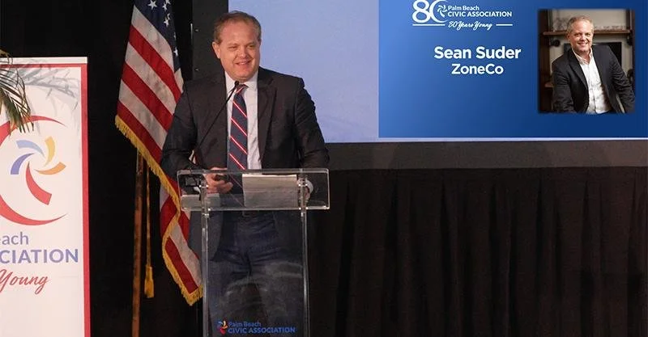
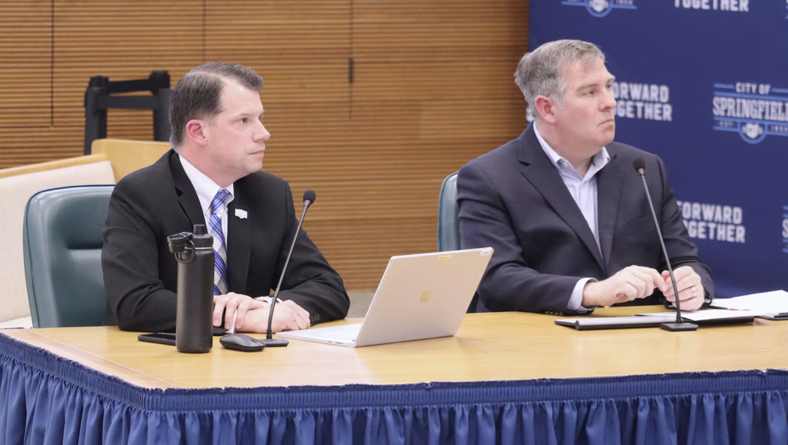
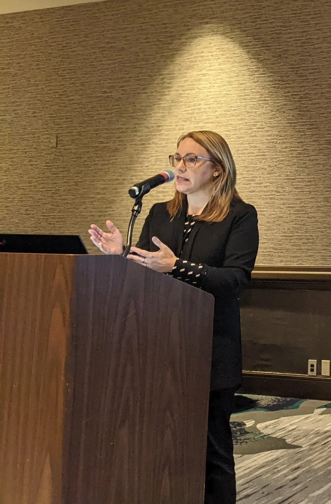

Speaking
Zoning educators.
We love sharing our knowledge and experience on planning and zoning history, trends, methods, and best practices at national, regional, and local conferences and events from coast to coast. We also offer board and commission trainings.
Upcoming and recent
All Zoning is New York City Zoning
Sean Suder presents "How New York City Shaped Communities Across America Since 1916" at the 21st National Conference on Planning History, hosted by the Society for American City and Regional Planning History at the University of Cincinnati.
APA Virginia Planning Conference
Sean Suder and Danville Planning Director Renee Burton on CODE Danville: a comprehensive rewrite in under twelve months.
APA National Planning Conference
Sean Suder delivered the Bettman Lecture on 100 Years of Euclid v. Ambler. Sean, Todd Kinskey, and Jocelyn Gibson presented sessions, and ZoneCo exhibited in the hall.
Featured presentations
Speaking engagements
Selected engagements since 2014.
- 2026National Conference on Planning History (SACRPH), Cincinnati, Ohio "All Zoning is New York City Zoning"Sean Suder
- 2026APA Virginia Planning Conference, Danville, VirginiaSean Suder
- 2026APA Cleveland Planning Conference, Cleveland, OhioSean Suder
- 2026APA National Planning Conference, Detroit, Michigan Bettman Lecture; sessionsSean Suder, Todd Kinskey, Jocelyn Gibson
- 2026APA Cincinnati, Allor Planning Conference, Cincinnati, OhioSean Suder, Todd Kinskey
- 2025APA National Capital Area Planning Conference, Washington, D.C.Sean Suder
- 2025APA Ohio Planning Conference, Toledo, OhioSean Suder, Todd Kinskey
- 2024APA Ohio, Kentucky, Indiana Conference, Fort Wayne, IndianaSean Suder, Todd Kinskey
- 2024National Alliance of Preservation Commissions, West Palm Beach, FloridaSean Suder
- 2024CNU 32, Cincinnati, Ohio Speaker and tour leaderSean Suder
- 2024APA Planning & Law Division, virtual PanelistSean Suder
- 2024Palm Beach Citizens Association, Palm Beach, Florida South End Zoning Study keynoteSean Suder
- 2024Zoning software and consulting panel with Suhag Kansara and Bret Keast, AICPJocelyn Gibson
- 2023International Council of Shopping Centers (ICSC), New York Conference, New York CitySean Suder
- 2023APA National Capital Region Conference, College Park, MarylandSean Suder
- 2023APA Ohio, Ohio Land Use Law Update, Columbus, OhioSean Suder
- 2023APA and National League of Cities, Housing Supply Accelerator Convening, Washington, D.C.Jocelyn Gibson
- 2023Indiana Preservation Conference, Muncie, IndianaZoneCo
- 2023Housing Coalition of the Northern Shenandoah Valley, Housing Summit, Winchester, VirginiaSean Suder
- 2023APA Ohio, Planning Commissioner Training, Cincinnati, OhioSean Suder
- 2023Designing Our Palm Beach Week, Palm Beach, Florida Welcome, "Mizner: The Placemaker," and closing remarksSean Suder
- 2022APA, Zoning for Equity, Resiliency, and a Post-Pandemic World, virtualSean Suder, Jocelyn Gibson
- 2022APA Ohio, Kentucky, Indiana Planning Conference, Louisville, KentuckySean Suder
- 2022Ohio Economic Development Association Annual Conference, Columbus, OhioJocelyn Gibson
- 2022ULI Cleveland, virtualSean Suder
- 2022Greater Ohio Policy Center Conference, Columbus, OhioJocelyn Gibson
- 2022APA Central Ohio Planning & Zoning Conference, Columbus, OhioSean Suder
- 2022APA National Planning Conference, San Diego, California Multiple sessionsSean Suder
- 2022CNU 30, Oklahoma City, Oklahoma Multiple sessionsJocelyn Gibson
- 2022Invest in Neighborhoods, Neighborhood Summit, Cincinnati, Ohio Form-Based Code updateSean Suder
- 2021Butler County, Ohio Board of Zoning Appeals member training, Hamilton, OhioSean Suder
- 2021APA Ohio Planning Commissioners Training, webinarSean Suder
- 2021Mid-Ohio Regional Planning Commission, webinar Building the Case for Updated Zoning CodesZoneCo
- 2021Melville Charitable Trust, Imagination Session, virtual Equitable zoning panelZoneCo
- 2021Heritage Ohio, webinar How Redlining Has Shaped Our Cities and Increased the Racial Divide in AmericaZoneCo
- 2020Turnaround Management Association, Cincinnati Chapter, webinar Retail and COVID-19ZoneCo
- 2020ICSC webcast Adaptive reuseZoneCo
- 2020Ohio Economic Development Institute, Site Selection Course, webinar ZoningZoneCo
- 2020CNU Midwest Debates, webinar DebaterZoneCo
- 2020&Co. webcast Zoning and COVID-19Sean Suder
- 2020CBRE Cincinnati Town Hall, Cincinnati, OhioZoneCo
- 2019National Association of Home Builders, LANDS Committee Conference, New Orleans, LouisianaSean Suder
- 2019APA Ohio Planning Conference, Cleveland, Ohio; APA Central Ohio Planning Conference, Columbus, OhioSean Suder
- 2019America Walks National Summit, Columbus, OhioSean Suder
- 2019AIA DesignDC Conference, Washington, D.C. Also 2018Sean Suder
- 2018APA Ohio/Kentucky/Indiana Conference, Cincinnati; APA Cleveland Zoning Conference; APA Northeast Ohio Zoning Workshop, Conneaut; APA Central Ohio Zoning Workshop, ColumbusSean Suder
- 2017APA National Planning Conference, New York City; APA Ohio, Athens; APA Indiana, Lafayette; APA Tennessee, Memphis; APA zoning workshops in Cincinnati and ClevelandSean Suder
- 2017Michigan Historic Preservation Network Annual Conference, Petoskey, Michigan; Cleveland Metropolitan Bar Association Municipal Law Day, Cleveland, OhioSean Suder
- 2016Heritage Ohio Conference, Cincinnati; Legacy Cities Conference, Detroit; Form-Based Code Institute 201 faculty, ColumbusSean Suder
- 2015APA Pennsylvania Conference, Pittsburgh; ULI Cleveland Zoning Workshop, ClevelandSean Suder
- 2014Legacy Cities Conference, Cleveland, OhioSean Suder



Not sure where to start?
Tell us what's not working in your code. We'll tell you what it would take to fix it, and what it would cost.